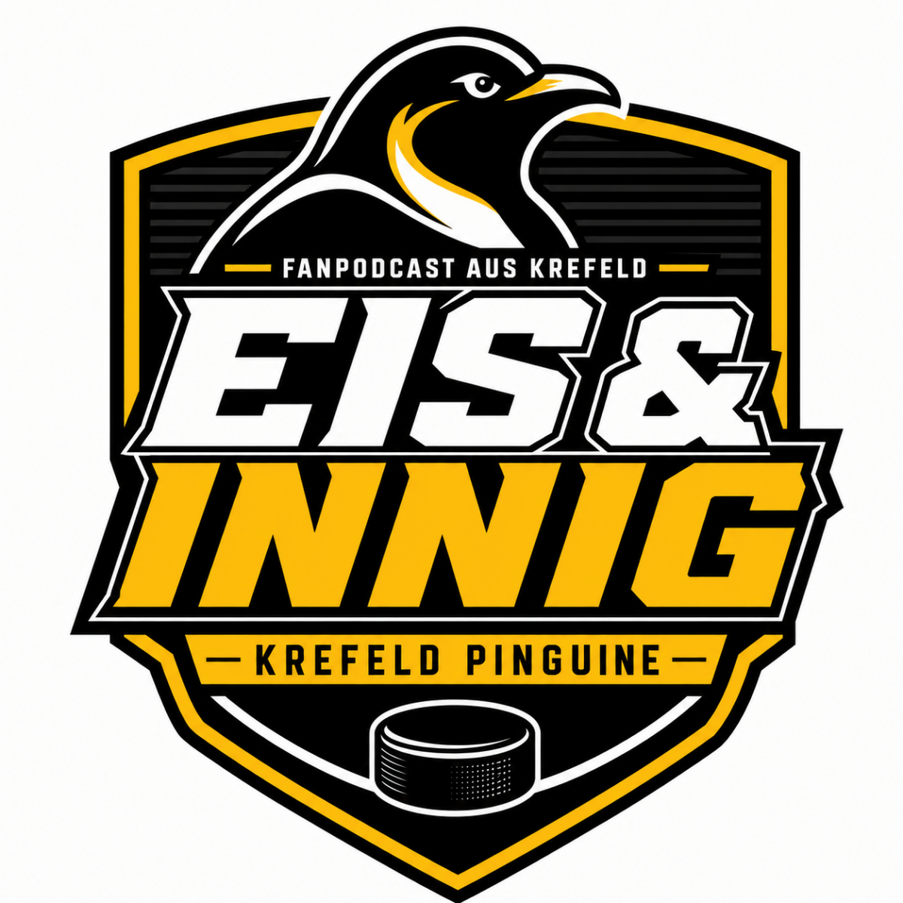

Der Fan Podcast rund um die Krefeld Pinguine.
Veröffentlicht am 03.08.2026
Unsere Generalprobe. Wir stellen das Projekt „Eis & Innig“ vor. Als Grundlage dient ein fiktive Folge aus den Playoff-Finals.